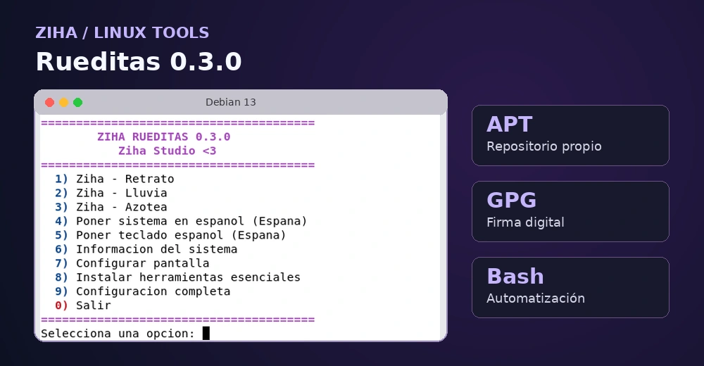

ziha.es/rueditas/

Publicado · v0.3.0
Ziha Rueditas
Herramienta Bash para personalizar Linux y preparar máquinas virtuales. Incluye configuración de pantalla, idioma, teclado, herramientas y un asistente guiado. Distribución con repositorio APT propio, firmas GPG y actualizaciones verificadas en Debian 13 AMD64. Ubuntu y ARM64 pendientes de validación.
Bash
Debian
APT / dpkg
GPG
Git
Ver proyecto
Código
fuente